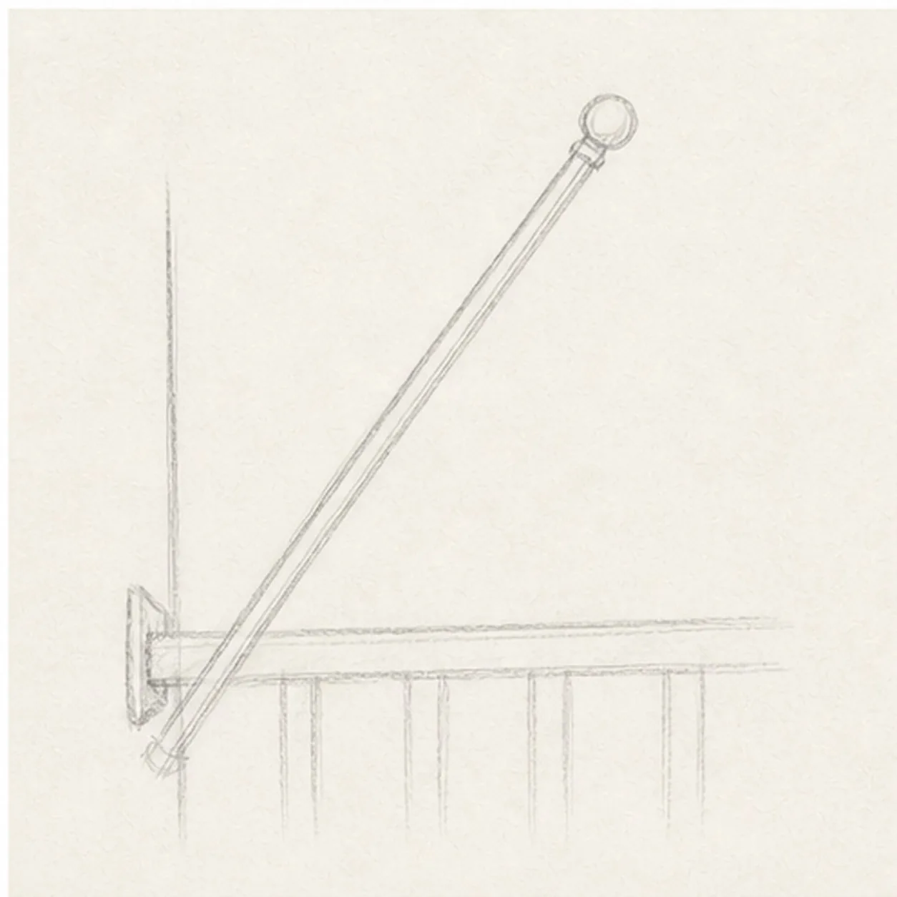
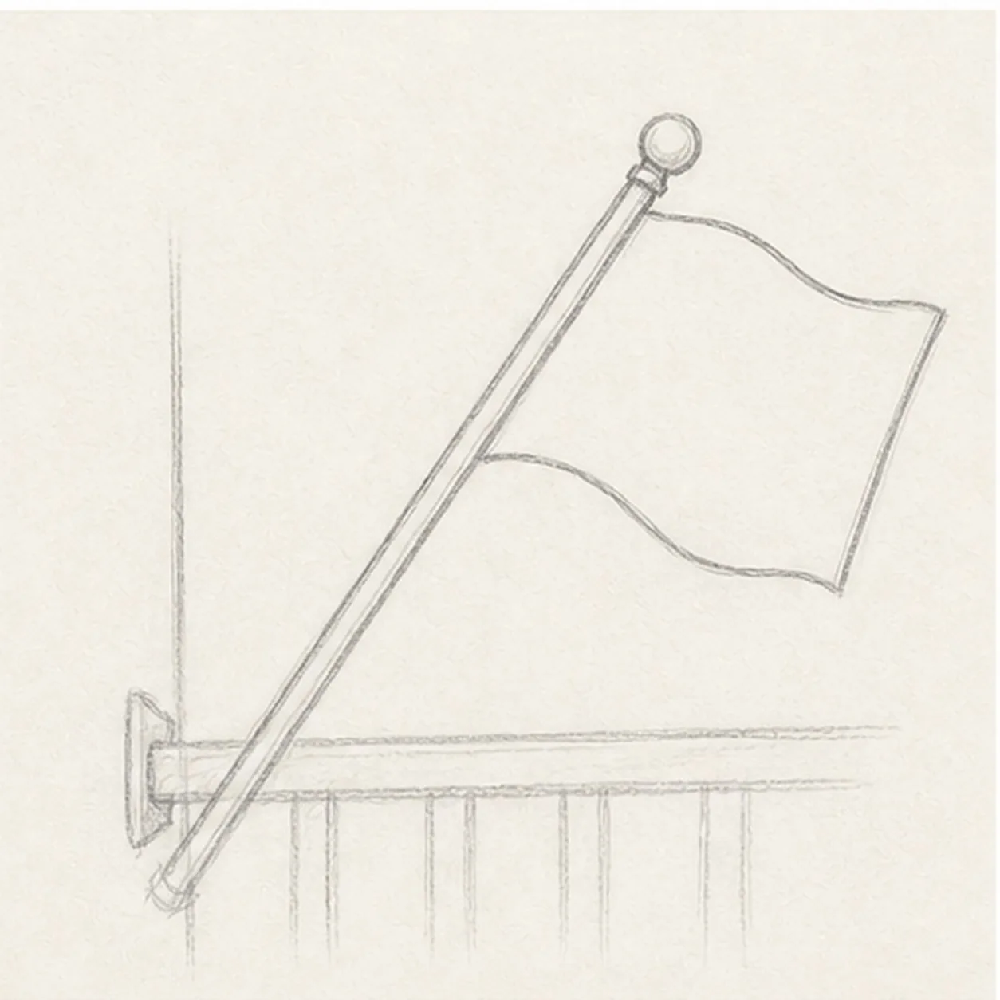
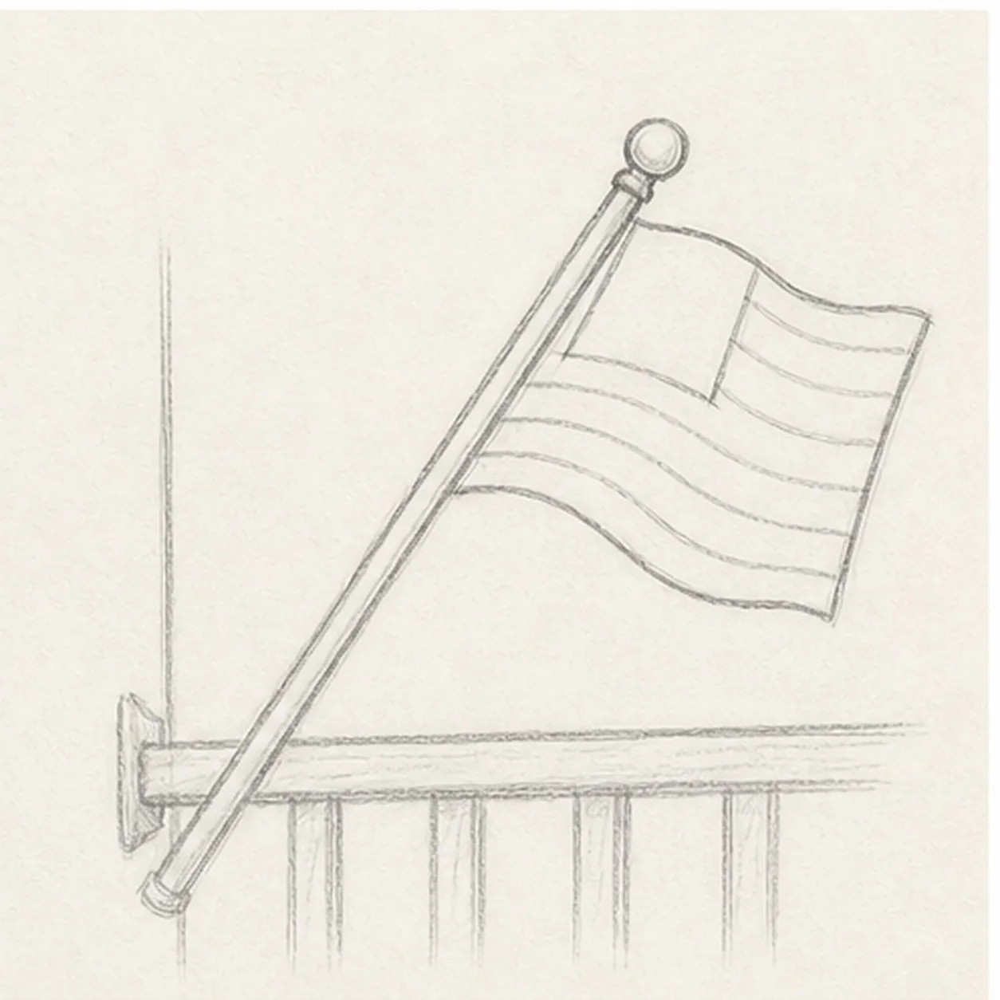
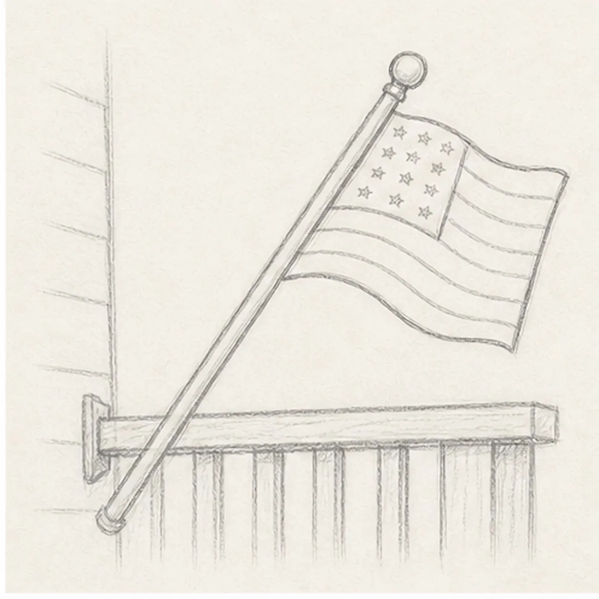
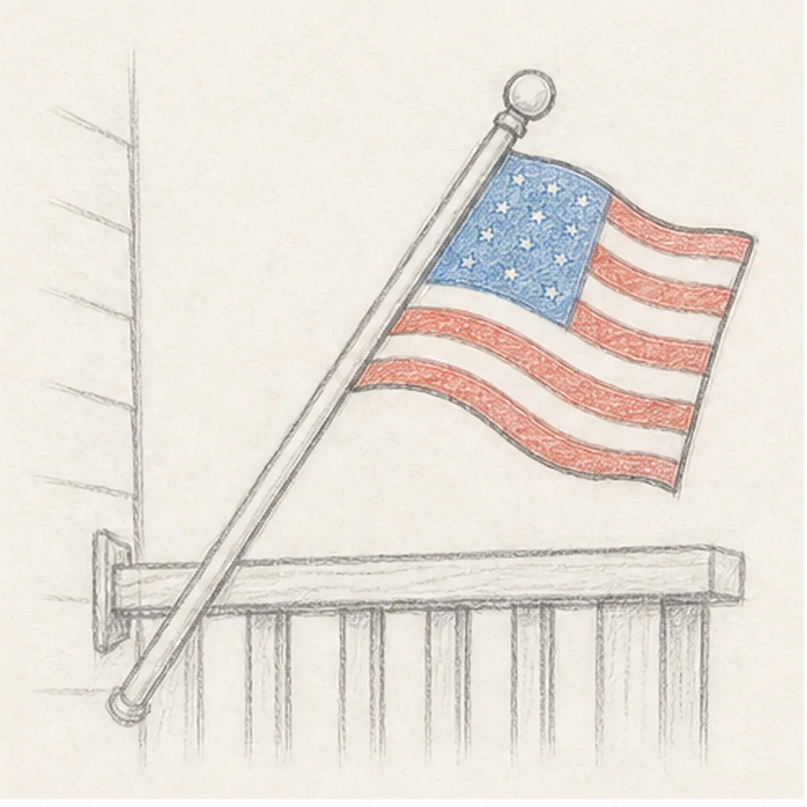

Pencil ready?
Let's draw a waving flag on a porch
Treat this as one small practice round: build the subject lightly, notice the shapes, then darken only the lines that help the finished sketch.
-
01

Place the pole
Draw a long angled pole with a small round knob at the top, then add a simple porch mount and rail guide near the base.
Sketch tip: Set the pole angle first. The flag will feel more natural if it grows from a confident diagonal.
-
02

Shape the waving flag
Attach a soft wavy rectangle to the pole, letting the top and bottom edges ripple in the same direction.
Sketch tip: Keep the far edge simple. One gentle wave is easier to stripe than a complicated zigzag.
-
03

Divide the flag
Add curved stripe bands across the flag and block in a small star field near the pole.
Sketch tip: Let every stripe follow the cloth's wave. Matching curves make the flag look flexible.
-
04

Add rail and star marks
Clarify the porch rail behind the pole, then add small star-like dots inside the field.
Sketch tip: Use dots or tiny stars instead of exact tiny shapes. The goal is a readable sketch, not a formal flag chart.
-
05

Add soft flag color
Shade the existing stripe bands with red, fill the field with blue, and add light graphite to the pole and rail.
Sketch tip: Keep the color broken and pencil-like. White paper between the stripes helps the flag stay bright.
-
06

Finish the porch flag
Darken the keeper contours, strengthen the existing red and blue accents, and deepen the pole, rail, and soft shadows.
Sketch tip: Stop before adding a whole house or landscape. The angled pole, porch rail, and waving cloth already tell the scene.